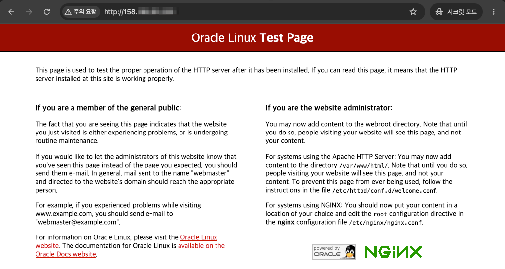
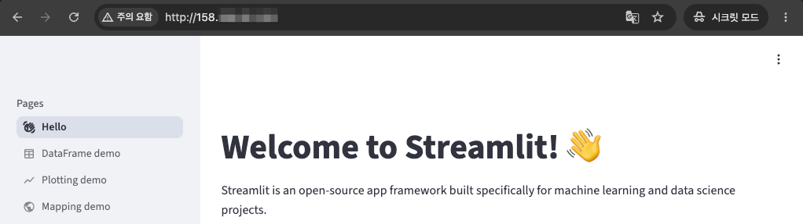
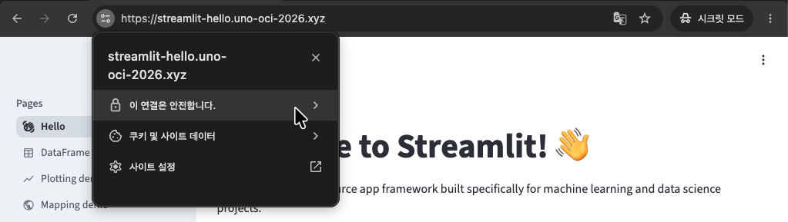
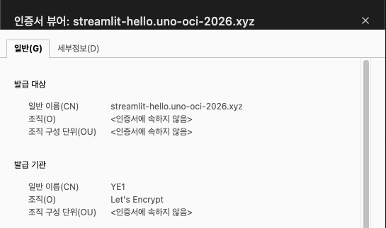

OCI Compute VM에 배포한 Streamlit 앱, Let’s Encrypt로 HTTPS 적용하기
OCI Compute VM 준비
-
테스트를 위한 VM을 준비합니다.
- OS: Oracle Linux 9
-
SSH 접속 후 앱을 배포합니다.
sudo dnf install python3-pip pip install streamlit nohup streamlit hello --server.port 8501 --server.address 0.0.0.0 > streamlit.log 2>&1 & -
OS레벨에서 방화벽 오픈
sudo firewall-cmd --permanent --add-port=8501/tcp sudo firewall-cmd --reload -
OCI Security Rule에서 Ingress Rule에 8501 포트를 추가합니다.
-
웹브라우저로 접속(http://vm-public-ip:8501)이 되는 지 확인합니다.
Nginx 설치
Let’s Encrypt를 이용해 무료 SSL/TLS 인증서를 발급받아 HTTPS로 서비스하기 위해, Nginx 서버를 먼저 설치합니다.
-
Nginx를 설치합니다.
sudo dnf install -y epel-release sudo dnf install -y nginx python3-pip sudo pip3 install certbot certbot-nginx -
certbot 설치 확인
$ certbot --version certbot 4.2.0 -
Nginx를 시작합니다.
Active: active (running)임을 확인합니다.$ systemctl status nginx ○ nginx.service - The nginx HTTP and reverse proxy server Loaded: loaded (/usr/lib/systemd/system/nginx.service; disabled; preset: disabled) Active: inactive (dead) $ sudo systemctl start nginx $ sudo systemctl status nginx ● nginx.service - The nginx HTTP and reverse proxy server Loaded: loaded (/usr/lib/systemd/system/nginx.service; disabled; preset: disabled) Active: active (running) since Thu 2026-09-17 08:00:40 GMT; 7s ago Process: 46523 ExecStartPre=/usr/bin/rm -f /run/nginx.pid (code=exited, status=0/SUCCESS) Process: 46524 ExecStartPre=/usr/sbin/nginx -t (code=exited, status=0/SUCCESS) Process: 46525 ExecStart=/usr/sbin/nginx (code=exited, status=0/SUCCESS) Main PID: 46526 (nginx) Tasks: 3 (limit: 72601) Memory: 3.0M (peak: 3.2M) CPU: 26ms CGroup: /system.slice/nginx.service ├─46526 "nginx: master process /usr/sbin/nginx" ├─46527 "nginx: worker process" └─46528 "nginx: worker process" ... -
OS레벨에서 80 포트를 오픈합니다.
sudo firewall-cmd --permanent --add-port=80/tcp sudo firewall-cmd --reload -
OCI Security Rule에서 Ingress Rule에 80 포트를 추가합니다.
-
웹브라우저에서 접속되는 지 확인합니다.

Nginx에서 HTTP로 라우팅하도록 설정
-
root 유저로 작업합니다.
$ sudo su # cd /etc/nginx/ -
/etc/nginx/nginx.conf파일을 보면include /etc/nginx/conf.d/*.conf;가 설정되어conf.d하위 폴더에 설정도 포함되게 되어 있습니다. 해당 위치에 새 파일streamlit.conf을 만듭니다.# /etc/nginx/conf.d/streamlit.conf server { server_name 127.0.0.1; location / { proxy_pass http://127.0.0.1:8501; proxy_http_version 1.1; proxy_set_header Host $host; proxy_set_header X-Real-IP $remote_addr; proxy_set_header X-Forwarded-For $proxy_add_x_forwarded_for; proxy_set_header X-Forwarded-Proto $scheme; # Streamlit WebSocket 연결 proxy_set_header Upgrade $http_upgrade; proxy_set_header Connection "upgrade"; proxy_read_timeout 86400; } } -
설정을 반영하고 재시작합니다.
sudo systemctl reload nginx sudo systemctl restart nginx -
접속 테스트합니다. 502 Bad Gateway 오류가 발생하는 지, 그리고 Nginx 에러 로그를 확인합니다.
# curl -v http://127.0.0.1 * Trying 127.0.0.1:80... * Connected to 127.0.0.1 (127.0.0.1) port 80 (#0) ... <head><title>502 Bad Gateway</title></head> <body> <center><h1>502 Bad Gateway</h1></center> <hr><center>nginx/1.20.1</center> ... # tail -n 50 /var/log/nginx/error.log ... 2026/09/17 08:20:25 [crit] 47049#47049: *1 connect() to 127.0.0.1:8501 failed (13: Permission denied) while ... -
위와 같은 오류가 나면, SELinux 관련 설정을 하고, 재시작합니다.
sudo setsebool -P httpd_can_network_connect 1 sudo systemctl reload nginx -
적용 결과를 확인합니다. on이 나오는 지 확인합니다.
# sudo getsebool httpd_can_network_connect httpd_can_network_connect --> on -
이제 접속이 잘 되는 지 확인합니다.
# curl -v http://127.0.0.1 * Trying 127.0.0.1:80... * Connected to 127.0.0.1 (127.0.0.1) port 80 (#0) ... < HTTP/1.1 200 OK < Server: nginx/1.20.1
Nginx에서 HTTPS로 라우팅하도록 설정
-
먼저 해당 Public IP가 DNS에 등록되어 있어야 합니다. 도메인을 구입한 사이트에 DNS Record로 등록 후 다음을 진행합니다.
-
등록후 잘 조회되는 지 확인합니다.
$ nslookup streamlit-hello.uno-oci-2026.xyz Server: 172.20.10.1 Address: 172.20.10.1#53 Non-authoritative answer: Name: streamlit-hello.uno-oci-2026.xyz Address: 158.xxx.xx.xxx -
다음을 확인합니다.
$ sudo certbot --version sudo: certbot: command not found-
root유저로 certbot 명령이 command not found가 나오면 다음을 순서대로 수행합니다.
sudo visudo -
다음 라인은 변경합니다. 아래아 같이
:/usr/local/sbin:/usr/local/bin을 뒤에 추가하고 저장합니다.Defaults secure_path = /sbin:/bin:/usr/sbin:/usr/bin:/usr/local/sbin:/usr/local/bin -
다시 확인합니다.
$ sudo certbot --version certbot 4.2.0
-
-
앞서 설정한 streamline.conf 파일에서 server_name을 사용할 도메인 이름으로 변경합니다.
# /etc/nginx/conf.d/streamlit.conf server { server_name streamlit-hello.uno-oci-2026.xyz; ... } -
인증서 발급을 시도합니다.
$ sudo certbot --nginx -d streamlit-hello.uno-oci-2026.xyz ... Requesting a certificate for streamlit-hello.uno-oci-2026.xyz ... Deploying certificate Successfully deployed certificate for streamlit-hello.uno-oci-2026.xyz to /etc/nginx/conf.d/streamlit.conf Congratulations! You have successfully enabled HTTPS on https://streamlit-hello.uno-oci-2026.xyz NEXT STEPS: - The certificate will need to be renewed before it expires. Certbot can automatically renew the certificate in the background, but you may need to take steps to enable that functionality. See https://certbot.org/renewal-setup for instructions. - - - - - - - - - - - - - - - - - - - - - - - - - - - - - - - - - - - - - - - - If you like Certbot, please consider supporting our work by: * Donating to ISRG / Let's Encrypt: https://letsencrypt.org/donate * Donating to EFF: https://eff.org/donate-le - - - - - - - - - - - - - - - - - - - - - - - - - - - - - - - - - - - - - - - - -
설정 파일을 확인합니다. Certbot에 ssl 관련 설정을 추가한 것을 볼 수 있습니다.
$ cat /etc/nginx/conf.d/streamlit.conf # /etc/nginx/conf.d/streamlit.conf server { server_name streamlit-hello.uno-oci-2026.xyz; location / { ... } listen 443 ssl; # managed by Certbot ssl_certificate /etc/letsencrypt/live/streamlit-hello.uno-oci-2026.xyz/fullchain.pem; # managed by Certbot ssl_certificate_key /etc/letsencrypt/live/streamlit-hello.uno-oci-2026.xyz/privkey.pem; # managed by Certbot include /etc/letsencrypt/options-ssl-nginx.conf; # managed by Certbot ssl_dhparam /etc/letsencrypt/ssl-dhparams.pem; # managed by Certbot } server { if ($host = streamlit-hello.uno-oci-2026.xyz) { return 301 https://$host$request_uri; } # managed by Certbot server_name streamlit-hello.uno-oci-2026.xyz; listen 80; return 404; # managed by Certbot } -
OS레벨에서 443 포트를 오픈합니다.
sudo firewall-cmd --permanent --add-port=443/tcp sudo firewall-cmd --reload -
OCI Security Rule에서 Ingress Rule에 443 포트를 추가합니다.
-
브라우저로 접속해 봅니다. https로 잘 접속이 되고, 인증서로 적용된 것을 볼 수 있습니다.


참고
이 글은 개인으로서, 개인의 시간을 할애하여 작성된 글입니다. 글의 내용에 오류가 있을 수 있으며, 글 속의 의견은 개인적인 의견입니다.